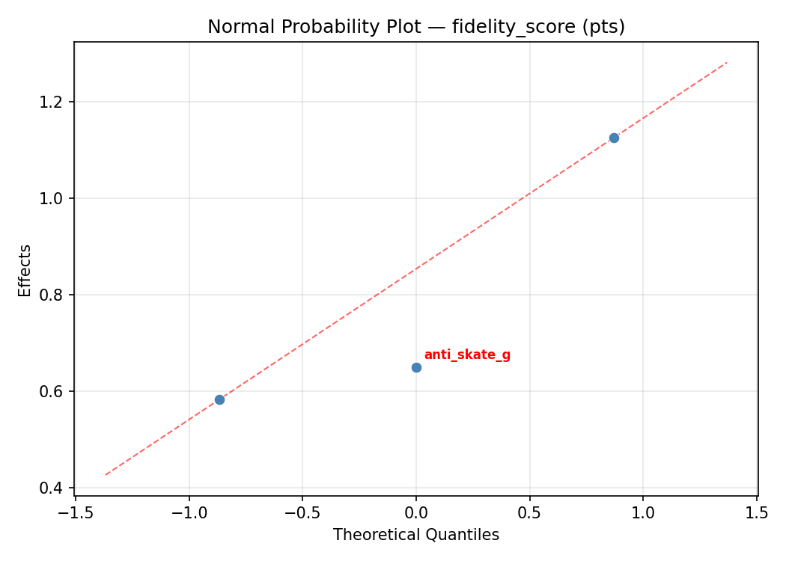
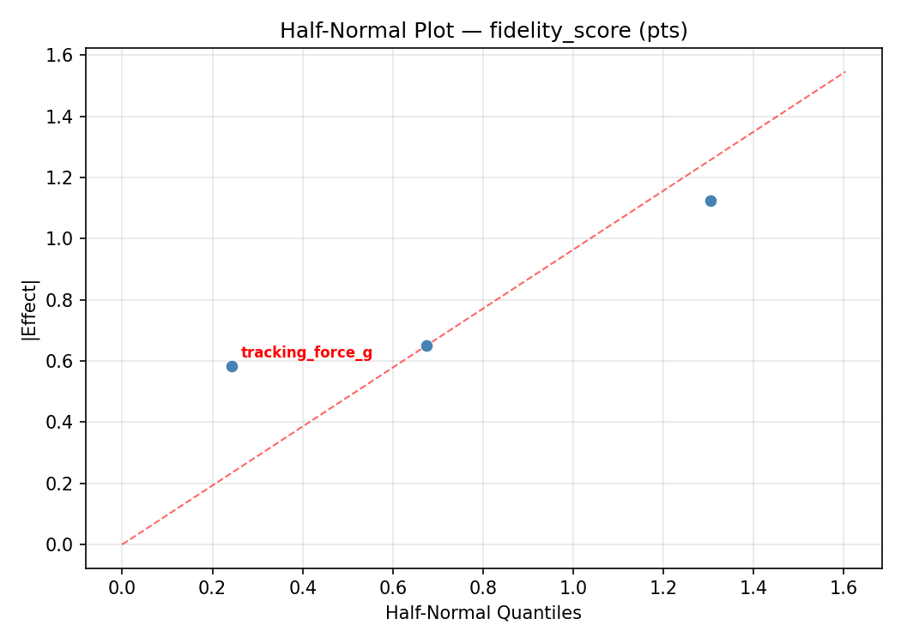
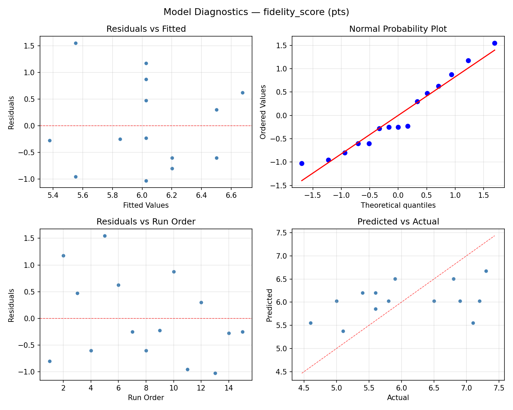
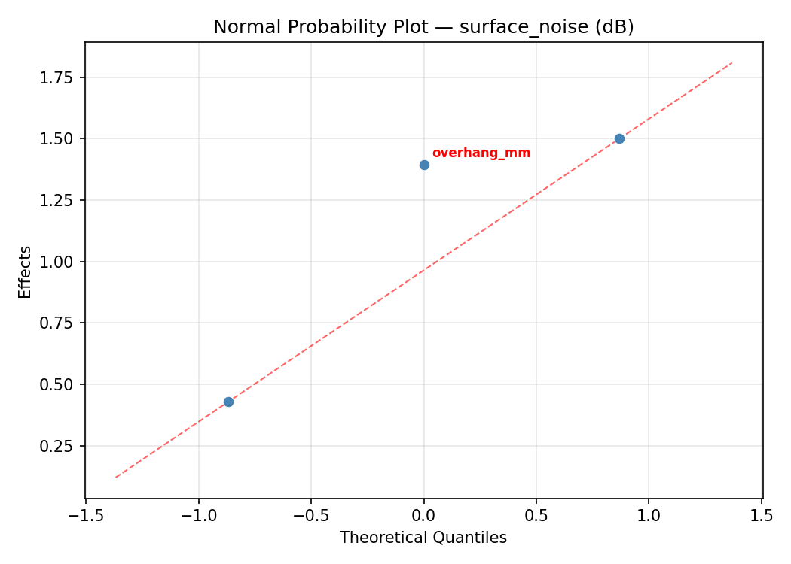
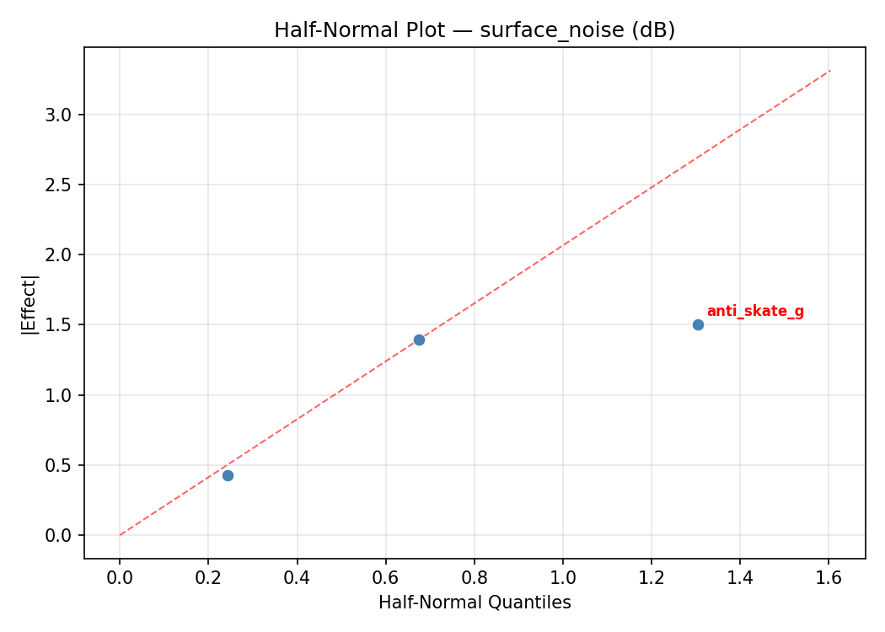
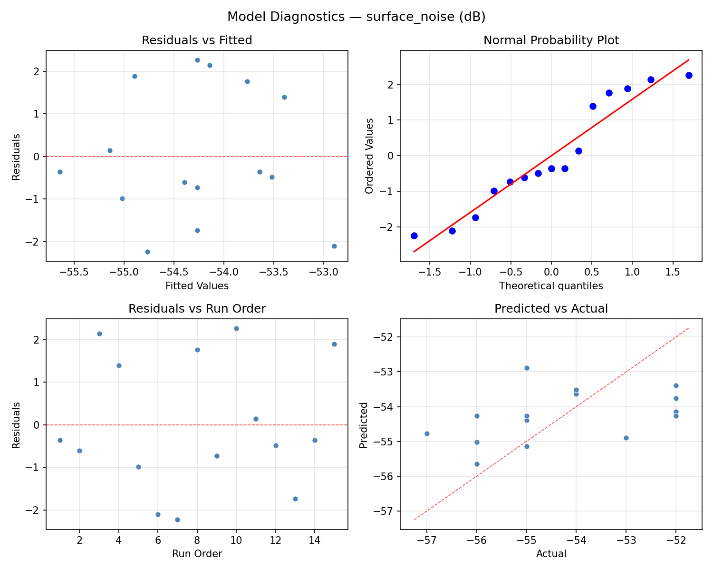

Summary
This experiment investigates vinyl playback optimization. Box-Behnken design to maximize audio fidelity and minimize surface noise by tuning tracking force, anti-skate, and cartridge alignment.
The design varies 3 factors: tracking force g (g), ranging from 1.2 to 2.2, anti skate g (g), ranging from 0.5 to 2.0, and overhang mm (mm), ranging from 14 to 18. The goal is to optimize 2 responses: fidelity score (pts) (maximize) and surface noise (dB) (minimize). Fixed conditions held constant across all runs include turntable = belt_drive, cartridge type = moving_magnet.
A Box-Behnken design was chosen because it efficiently fits quadratic models with 3 continuous factors while avoiding extreme corner combinations — requiring only 15 runs instead of the 8 needed for a full factorial at two levels.
Quadratic response surface models were fitted to capture potential curvature and factor interactions. The RSM contour plots below visualize how pairs of factors jointly affect each response.
Key Findings
For fidelity score, the most influential factors were overhang mm (49.3%), tracking force g (32.1%), anti skate g (18.6%). The best observed value was 7.3 (at tracking force g = 1.7, anti skate g = 1.25, overhang mm = 16).
For surface noise, the most influential factors were overhang mm (52.3%), anti skate g (28.0%), tracking force g (19.6%). The best observed value was -57.0 (at tracking force g = 2.2, anti skate g = 1.25, overhang mm = 18).
Recommended Next Steps
- Run confirmation experiments at the predicted optimal settings to validate the model.
- Consider whether any fixed factors should be varied in a future study.
Experimental Setup
Factors
| Factor | Low | High | Unit |
|---|
tracking_force_g | 1.2 | 2.2 | g |
anti_skate_g | 0.5 | 2.0 | g |
overhang_mm | 14 | 18 | mm |
Fixed: turntable = belt_drive, cartridge_type = moving_magnet
Responses
| Response | Direction | Unit |
|---|
fidelity_score | ↑ maximize | pts |
surface_noise | ↓ minimize | dB |
Configuration
{
"metadata": {
"name": "Vinyl Playback Optimization",
"description": "Box-Behnken design to maximize audio fidelity and minimize surface noise by tuning tracking force, anti-skate, and cartridge alignment"
},
"factors": [
{
"name": "tracking_force_g",
"levels": [
"1.2",
"2.2"
],
"type": "continuous",
"unit": "g"
},
{
"name": "anti_skate_g",
"levels": [
"0.5",
"2.0"
],
"type": "continuous",
"unit": "g"
},
{
"name": "overhang_mm",
"levels": [
"14",
"18"
],
"type": "continuous",
"unit": "mm"
}
],
"fixed_factors": {
"turntable": "belt_drive",
"cartridge_type": "moving_magnet"
},
"responses": [
{
"name": "fidelity_score",
"optimize": "maximize",
"unit": "pts"
},
{
"name": "surface_noise",
"optimize": "minimize",
"unit": "dB"
}
],
"settings": {
"operation": "box_behnken",
"test_script": "use_cases/159_vinyl_playback/sim.sh"
}
}
Experimental Matrix
The Box-Behnken Design produces 15 runs. Each row is one experiment with specific factor settings.
| Run | tracking_force_g | anti_skate_g | overhang_mm |
|---|
| 1 | 1.7 | 0.5 | 14 |
| 2 | 1.7 | 1.25 | 16 |
| 3 | 2.2 | 1.25 | 18 |
| 4 | 2.2 | 1.25 | 14 |
| 5 | 1.7 | 1.25 | 16 |
| 6 | 1.7 | 1.25 | 16 |
| 7 | 1.2 | 1.25 | 18 |
| 8 | 2.2 | 0.5 | 16 |
| 9 | 1.7 | 0.5 | 18 |
| 10 | 2.2 | 2 | 16 |
| 11 | 1.2 | 1.25 | 14 |
| 12 | 1.7 | 2 | 18 |
| 13 | 1.2 | 0.5 | 16 |
| 14 | 1.2 | 2 | 16 |
| 15 | 1.7 | 2 | 14 |
Step-by-Step Workflow
1
Preview the design
$ python doe.py info --config use_cases/159_vinyl_playback/config.json
2
Generate the runner script
$ python doe.py generate --config use_cases/159_vinyl_playback/config.json \
--output use_cases/159_vinyl_playback/results/run.sh --seed 42
3
Execute the experiments
$ bash use_cases/159_vinyl_playback/results/run.sh
4
Analyze results
$ python doe.py analyze --config use_cases/159_vinyl_playback/config.json
5
Get optimization recommendations
$ python doe.py optimize --config use_cases/159_vinyl_playback/config.json
6
Multi-objective optimization
With 2 competing responses, use --multi to find the best compromise via Derringer–Suich desirability.
$ python doe.py optimize --config use_cases/159_vinyl_playback/config.json --multi
7
Generate the HTML report
$ python doe.py report --config use_cases/159_vinyl_playback/config.json \
--output use_cases/159_vinyl_playback/results/report.html
Features Exercised
| Feature | Value |
|---|
| Design type | box_behnken |
| Factor types | continuous (all 3) |
| Arg style | double-dash |
| Responses | 2 (fidelity_score ↑, surface_noise ↓) |
| Total runs | 15 |
Analysis Results
Generated from actual experiment runs using the DOE Helper Tool.
Response: fidelity_score
Top factors: overhang_mm (49.3%), tracking_force_g (32.1%), anti_skate_g (18.6%).
ANOVA
| Source | DF | SS | MS | F | p-value |
|---|
| Source | DF | SS | MS | F | p-value |
| tracking_force_g | 2 | 1.2658 | 0.6329 | 0.708 | 0.5209 |
| anti_skate_g | 2 | 0.3293 | 0.1647 | 0.184 | 0.8351 |
| overhang_mm | 2 | 3.5258 | 1.7629 | 1.973 | 0.2011 |
| Lack | of | Fit | 6 | 3.7818 | 0.6303 |
| Pure | Error | 2 | 1.7867 | | |
| Error | 8 | 5.5685 | 0.8933 | | |
| Total | 14 | 10.6893 | 0.7635 | | |
Pareto Chart

Main Effects Plot

Normal Probability Plot of Effects

Half-Normal Plot of Effects

Model Diagnostics

Response: surface_noise
Top factors: overhang_mm (52.3%), anti_skate_g (28.0%), tracking_force_g (19.6%).
ANOVA
| Source | DF | SS | MS | F | p-value |
|---|
| Source | DF | SS | MS | F | p-value |
| tracking_force_g | 2 | 1.4333 | 0.7167 | 0.537 | 0.6039 |
| anti_skate_g | 2 | 3.2190 | 1.6095 | 1.207 | 0.3482 |
| overhang_mm | 2 | 9.2190 | 4.6095 | 3.457 | 0.0828 |
| Lack | of | Fit | 6 | 24.3952 | 4.0659 |
| Pure | Error | 2 | 2.6667 | | |
| Error | 8 | 27.0619 | 1.3333 | | |
| Total | 14 | 40.9333 | 2.9238 | | |
Pareto Chart

Main Effects Plot

Normal Probability Plot of Effects

Half-Normal Plot of Effects

Model Diagnostics

Response Surface Plots
3D surfaces fitted with quadratic RSM. Red dots are observed data points.
fidelity score anti skate g vs overhang mm

fidelity score tracking force g vs anti skate g

fidelity score tracking force g vs overhang mm

surface noise anti skate g vs overhang mm

surface noise tracking force g vs anti skate g

surface noise tracking force g vs overhang mm

Multi-Objective Optimization
When responses compete, Derringer–Suich desirability finds the best compromise.
Each response is scaled to a 0–1 desirability, then combined via a weighted geometric mean.
Overall Desirability
D = 0.9784
Per-Response Desirability
| Response | Weight | Desirability | Predicted | Dir |
|---|
fidelity_score |
1.5 |
|
7.68 1.0000 7.68 pts |
↑ |
surface_noise |
1.0 |
|
-56.96 0.9470 -56.96 dB |
↓ |
Recommended Settings
| Factor | Value |
|---|
tracking_force_g | 1.2 g |
anti_skate_g | 2 g |
overhang_mm | 18 mm |
Source: from RSM model prediction
Trade-off Summary
Sacrifice = how much worse than single-objective best.
| Response | Predicted | Best Observed | Sacrifice |
|---|
surface_noise | -56.96 | -57.00 | +0.04 |
Top 3 Runs by Desirability
| Run | D | Factor Settings |
|---|
| #6 | 0.7879 | tracking_force_g=1.2, anti_skate_g=1.25, overhang_mm=18 |
| #2 | 0.7711 | tracking_force_g=2.2, anti_skate_g=0.5, overhang_mm=16 |
Model Quality
| Response | R² | Type |
|---|
surface_noise | 0.7333 | quadratic |
Full Multi-Objective Output
============================================================
MULTI-OBJECTIVE OPTIMIZATION
Method: Derringer-Suich Desirability Function
============================================================
Overall desirability: D = 0.9784
Response Weight Desirability Predicted Direction
---------------------------------------------------------------------
fidelity_score 1.5 1.0000 7.68 pts ↑
surface_noise 1.0 0.9470 -56.96 dB ↓
Recommended settings:
tracking_force_g = 1.2 g
anti_skate_g = 2 g
overhang_mm = 18 mm
(from RSM model prediction)
Trade-off summary:
fidelity_score: 7.68 (best observed: 7.30, sacrifice: -0.38)
surface_noise: -56.96 (best observed: -57.00, sacrifice: +0.04)
Model quality:
fidelity_score: R² = 0.8226 (quadratic)
surface_noise: R² = 0.7333 (quadratic)
Top 3 observed runs by overall desirability:
1. Run #5 (D=0.8395): tracking_force_g=2.2, anti_skate_g=1.25, overhang_mm=14
2. Run #6 (D=0.7879): tracking_force_g=1.2, anti_skate_g=1.25, overhang_mm=18
3. Run #2 (D=0.7711): tracking_force_g=2.2, anti_skate_g=0.5, overhang_mm=16
Full Analysis Output
=== Main Effects: fidelity_score ===
Factor Effect Std Error % Contribution
--------------------------------------------------------------
overhang_mm 1.0607 0.2256 49.3%
tracking_force_g 0.6893 0.2256 32.1%
anti_skate_g 0.4000 0.2256 18.6%
=== ANOVA Table: fidelity_score ===
Source DF SS MS F p-value
-----------------------------------------------------------------------------
tracking_force_g 2 1.2658 0.6329 0.708 0.5209
anti_skate_g 2 0.3293 0.1647 0.184 0.8351
overhang_mm 2 3.5258 1.7629 1.973 0.2011
Lack of Fit 6 3.7818 0.6303 0.706 0.6868
Pure Error 2 1.7867 0.8933
Error 8 5.5685 0.8933
Total 14 10.6893 0.7635
=== Summary Statistics: fidelity_score ===
tracking_force_g:
Level N Mean Std Min Max
------------------------------------------------------------
1.2 4 5.6250 0.7848 4.6000 6.5000
1.7 7 6.3143 0.9494 5.0000 7.3000
2.2 4 5.9250 0.8500 5.1000 7.1000
anti_skate_g:
Level N Mean Std Min Max
------------------------------------------------------------
0.5 4 5.8500 1.1150 4.6000 7.3000
1.25 7 6.0000 0.7937 5.0000 7.1000
2 4 6.2500 0.9747 5.1000 7.2000
overhang_mm:
Level N Mean Std Min Max
------------------------------------------------------------
14 4 6.5750 0.7274 5.6000 7.3000
16 7 5.5143 0.7267 4.6000 6.8000
18 4 6.3750 0.8958 5.6000 7.2000
=== Main Effects: surface_noise ===
Factor Effect Std Error % Contribution
--------------------------------------------------------------
overhang_mm 2.0000 0.4415 52.3%
anti_skate_g 1.0714 0.4415 28.0%
tracking_force_g 0.7500 0.4415 19.6%
=== ANOVA Table: surface_noise ===
Source DF SS MS F p-value
-----------------------------------------------------------------------------
tracking_force_g 2 1.4333 0.7167 0.537 0.6039
anti_skate_g 2 3.2190 1.6095 1.207 0.3482
overhang_mm 2 9.2190 4.6095 3.457 0.0828
Lack of Fit 6 24.3952 4.0659 3.049 0.2674
Pure Error 2 2.6667 1.3333
Error 8 27.0619 1.3333
Total 14 40.9333 2.9238
=== Summary Statistics: surface_noise ===
tracking_force_g:
Level N Mean Std Min Max
------------------------------------------------------------
1.2 4 -54.7500 2.0616 -57.0000 -52.0000
1.7 7 -54.0000 1.5275 -56.0000 -52.0000
2.2 4 -54.2500 2.0616 -56.0000 -52.0000
anti_skate_g:
Level N Mean Std Min Max
------------------------------------------------------------
0.5 4 -53.5000 1.7321 -55.0000 -52.0000
1.25 7 -54.5714 1.8127 -57.0000 -52.0000
2 4 -54.5000 1.7321 -56.0000 -52.0000
overhang_mm:
Level N Mean Std Min Max
------------------------------------------------------------
14 4 -53.0000 1.4142 -55.0000 -52.0000
16 7 -54.5714 1.3973 -56.0000 -52.0000
18 4 -55.0000 2.1602 -57.0000 -52.0000
Optimization Recommendations
=== Optimization: fidelity_score ===
Direction: maximize
Best observed run: #6
tracking_force_g = 1.7
anti_skate_g = 1.25
overhang_mm = 16
Value: 7.3
RSM Model (linear, R² = 0.0646, Adj R² = -0.1906):
Coefficients:
intercept +6.0267
tracking_force_g -0.2750
anti_skate_g +0.0250
overhang_mm +0.1000
RSM Model (quadratic, R² = 0.2837, Adj R² = -1.0056):
Coefficients:
intercept +6.3333
tracking_force_g -0.2750
anti_skate_g +0.0250
overhang_mm +0.1000
tracking_force_g*anti_skate_g +0.1500
tracking_force_g*overhang_mm +0.2000
anti_skate_g*overhang_mm +0.5000
tracking_force_g^2 +0.1583
anti_skate_g^2 -0.3917
overhang_mm^2 -0.3417
Curvature analysis:
anti_skate_g coef=-0.3917 concave (has a maximum)
overhang_mm coef=-0.3417 concave (has a maximum)
tracking_force_g coef=+0.1583 convex (has a minimum)
Notable interactions:
anti_skate_g*overhang_mm coef=+0.5000 (synergistic)
Predicted optimum (from linear model, at observed points):
tracking_force_g = 1.2
anti_skate_g = 1.25
overhang_mm = 18
Predicted value: 6.4017
Surface optimum (via L-BFGS-B, linear model):
tracking_force_g = 1.2
anti_skate_g = 2
overhang_mm = 18
Predicted value: 6.4267
Model quality: Weak fit — consider adding center points or using a different design.
Factor importance:
1. tracking_force_g (effect: 0.6, contribution: 39.9%)
2. overhang_mm (effect: 0.4, contribution: 30.8%)
3. anti_skate_g (effect: 0.4, contribution: 29.3%)
=== Optimization: surface_noise ===
Direction: minimize
Best observed run: #7
tracking_force_g = 2.2
anti_skate_g = 1.25
overhang_mm = 18
Value: -57.0
RSM Model (linear, R² = 0.0061, Adj R² = -0.2650):
Coefficients:
intercept -54.2667
tracking_force_g -0.1250
anti_skate_g +0.1250
overhang_mm +0.0000
RSM Model (quadratic, R² = 0.6885, Adj R² = 0.1279):
Coefficients:
intercept -54.0000
tracking_force_g -0.1250
anti_skate_g +0.1250
overhang_mm +0.0000
tracking_force_g*anti_skate_g +1.5000
tracking_force_g*overhang_mm -1.7500
anti_skate_g*overhang_mm -0.7500
tracking_force_g^2 +0.2500
anti_skate_g^2 +0.2500
overhang_mm^2 -1.0000
Curvature analysis:
overhang_mm coef=-1.0000 concave (has a maximum)
anti_skate_g coef=+0.2500 convex (has a minimum)
tracking_force_g coef=+0.2500 convex (has a minimum)
Notable interactions:
tracking_force_g*overhang_mm coef=-1.7500 (antagonistic)
tracking_force_g*anti_skate_g coef=+1.5000 (synergistic)
anti_skate_g*overhang_mm coef=-0.7500 (antagonistic)
Predicted optimum (from quadratic model, at observed points):
tracking_force_g = 1.2
anti_skate_g = 0.5
overhang_mm = 16
Predicted value: -52.0000
Surface optimum (via L-BFGS-B, quadratic model):
tracking_force_g = 2.2
anti_skate_g = 0.5
overhang_mm = 18
Predicted value: -57.2500
Model quality: Moderate fit — use predictions directionally, not precisely.
Factor importance:
1. overhang_mm (effect: 1.0, contribution: 54.7%)
2. tracking_force_g (effect: 0.4, contribution: 22.6%)
3. anti_skate_g (effect: 0.4, contribution: 22.6%)